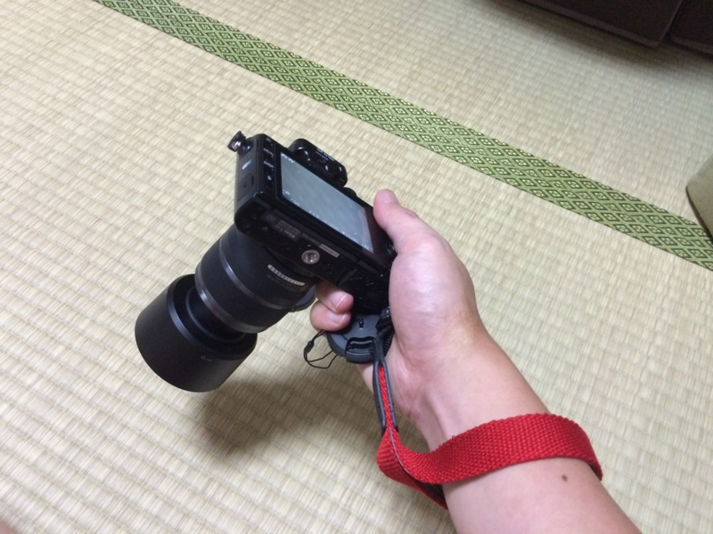

Nikon 1 V3 をプチ強化した。
公開日：

まずは、レンズキャップ。自分はよくレンズキャップをなくすので、本体にヒモでつなげておけるヤツを愛用している。

Kenko レンズアクセサリ ストラップ付レンズキャップ40.5mm KLC-40.5
- 出版社/メーカー: ケンコー
- 発売日: 2011/12/16
- メディア: Camera
- 購入: 2人 クリック: 2回
- この商品を含むブログを見る
V3 のレンズキットについてくる標準ズームレンズはレンズキャップそのものがない自動シャッター付きなのだけど、そのほかのレンズにはそんな便利機能などついていないので、結局これが必要になる。
2つ目は、ストラップ。今回はなんとなく手首にかけるタイプを選んでみた。肩にかけるタイプは、カバンに入れるときに邪魔になる。
 ミラーレス一眼用 シンプル レッド ETM-9752")
【アマゾンオリジナル】ETSUMI ハンドストラップ ハンドストラップN ACTIVE(アクティブ) ミラーレス一眼用 シンプル レッド ETM-9752
- 出版社/メーカー: エツミ
- 発売日: 2013/07/08
- メディア: Camera
- この商品を含むブログを見る
使ってみて思ったのだけど、フリーハンドにならないのは肩にかけるタイプに劣る点だなー。手首に絡ませてしっかりホールドできる点は大変よろしい。

Amazon のレビューで「わっかが小さくて手首が通らない」っていう記述があったけど、自分は大丈夫だった。まぁ、こんなもんなんじゃないかな？

Nikon Li-ion リチャージャブル バッテリー ENEL20A
- 出版社/メーカー: ニコン
- 発売日: 2014/04/14
- メディア: Camera
- この商品を含むブログ (1件) を見る
最後は予備のバッテリー。4,000円とか、高すぎんよ……でも、自分は GPS 大好き人間だし、V3 の無線 LAN 機能も便利でよく使う。バッテリーはいくらあっても足りないことはないって感じだ。昔にみたいに乾電池でも使えるようにしてくれてあると、いざというときも安心なんだけどなぁ。